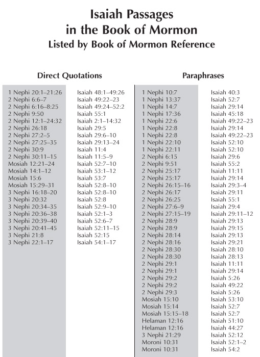

The Book of Mormon incorporates numerous chapters from the Book of Isaiah, directly quoting passages from
the King James Version (KJV) of the Bible. These quotations even include translation errors, which would
have been impossible to inscribe on the original gold plates, as the KJV did not exist until thousands of
years after the plates were reportedly created. This issue directly challenges the Book of Mormon's claim of
divine translation, as it contradicts the described process Joseph Smith used. According to the narrative,
he would place a "seer stone" in a hat, then lower his face into the hat to block out light, reading aloud
only the words that appeared on the stone. Words would only change once they were written correctly, meaning
Smith had no opportunity to switch between using the seer stone and copying from the KJV Bible.
When Isaiah chapters appear in the Book of Mormon, they unmistakably resemble KJV language, as outlined in
discussions on the King James Bible section. The initial chapters of Isaiah (1–39) are attributed to a
historical Isaiah, while scholars believe chapters 40–55 (Deutero-Isaiah) and 56–66 (Trito-Isaiah) were
authored by later writers. Scholars date the original Isaiah to the 8th and 7th centuries BCE, with
Deutero-Isaiah composed after the Babylonian exile (586 BCE). Since the brass plates were taken from Laban
in 600 BCE, this raises significant issues, as the Book of Mormon extensively cites Deutero-Isaiah chapters
that weren’t yet written at the time of Lehi’s departure.
For instance, in 2 Nephi 1:13–14,23, Lehi quotes Deutero-Isaiah material, while Jacob reads from it in 2
Nephi 8. These passages are not only from Deutero-Isaiah but also mirror the exact wording from the KJV,
including mistranslations, italicized text, and some late additions—elements unique to the KJV.
Deutero-Isaiah's influence in the Book of Mormon extends beyond direct quotations by Lehi and Jacob. For
example, 2 Nephi 8:24–25 mirrors Isaiah 52:1–2 from the KJV:
24 Awake, awake, put on thy strength, O Zion; put on thy beautiful garments, O Jerusalem, the holy city; for
henceforth there shall no more come into thee the uncircumcised and the unclean.
25 Shake thyself from the dust; arise, sit down, O Jerusalem; loose thyself from the bands of thy neck, O
captive daughter of Zion.
These verses are not exclusive to 2 Nephi; significant portions of Isaiah 52 are also cited by Jesus in 3
Nephi, and Isaiah 52:24 is quoted in Moroni 10:31. If these sections of Isaiah were composed after Lehi's
time, it introduces a considerable anachronism, suggesting the author of the Book of Mormon was using
material accessible in the 19th century, namely the KJV Bible.
While the inclusion of KJV chapters and verses in the Book of Mormon already casts doubt on its
authenticity, the use of Deutero-Isaiah amplifies this issue. The later composition of these chapters
indicates they could not have been present on the plates taken by Lehi, marking this inclusion as a critical
anachronism. This issue parallels the controversies surrounding the Book of Abraham, where Joseph Smith
likely lacked knowledge of biblical history that later scholarship would reveal, inadvertently introducing
late additions into the Book of Mormon.
Problems with Deutero-Isaiah and the Book of Mormon
The problem with Deutero-Isaiah, just as we saw with late additions to the Sermon on the Mount and the long
ending of Mark in previous sections, is that we have more examples where Joseph Smith not only copied source
material, but copied material that has no historical basis to be in the Book of Mormon. For a brief overview
of the Deutero-Isaiah problem, I highly recommend reading biblical scholar and former CES instructor Dr.
David Bokovoy's two part write-up on Deutero-Isaiah from 2016. Those two articles can be read at:
One of the most insightful perspectives held by mainstream biblical scholars involves the historical
development of the book of Isaiah. Since the 20th century, all mainstream scholars have held the position
that chapters 40-66 were written after the Jewish exile into Babylon (c.a. 586 BCE). Scholars typically
identify the exilic material in 40-55 by the title Deutero-Isaiah, and the post-exilic material in 56-66 by
the title Trito-Isaiah (though these works may have been written by multiple authors). This means, of
course, that the second half of the book of Isaiah was not written by the historical Isaiah, a prophet who
lived in Jerusalem during the eighth century BCE. For Latter-day Saints, this presents a direct challenge
for traditionally held paradigms concerning the Book of Mormon, since some of this material is not only
attributed to Isaiah, it has had a significant impact upon the Book of Mormon. If mainstream scholars are
correct then this material would not have been available to Lehi’s family as something they could have taken
with them to America.
The reasons that scholars can date this material to the post-exilic time frame are multiple, and I want to
quickly summarize them here:
Chapter 45 of Isaiah mentioned Cyrus, the king that would liberate the Jews, by name. This indicates
that the writer of this material was aware of this historical event, which is why they could give such
specifics such as writing Cyrus by name.
In 1879, the Cyrus Cylinder was discovered in the Middle East, which was created sometime between
539-538 BCE. It is written in Akkadian, the language of the Babylonians, and gives more historical
context to the material in Deutero-Isaiah. In Dr. Bokovoy's Deutero-Isaiah piece, he outlines how the
context allows scholars to see that Deutero-Isaiah was written after the Cyrus Cylinder was created, as
Deutero-Isaiah serves as a "polemic that belittles other gods and vindicates Israel’s deity Yahweh is
one of the main themes that ties Isaiah 40-55 together as a literary unit."
As Dr. Bokovoy explains, the historical Isaiah believed in the “the inviolability of Jerusalem.” He did
not believe Jerusalem would ever be destroyed as it was sacred. Yet "Isaiah 40 begins as a message of
comfort to the Judean people since Jerusalem had been destroyed. But this was not something that the
historical Isaiah believed would happen." Furthermore, "Surely, if his theology switched so drastically
we would expect some sort of statement that explained how he came to know that his earlier oracles were
incorrect. In reality, chapters 40-66 never speak of the Babylonian period as a distant future reality,
as if someone were prophesying about it. Instead, the Babylonian period is described as the present,
historical condition."
The influence of Jeremiah on Deutero-Isaiah material presents a timeline issue as Jeremiah lived after
the historical Isaiah. This is an anachronism that allows scholars to date the Deutero-Isaiah material
as the author was aware of Jeremiah's teachings, and the writings of Jeremiah make clear that Jeremiah
did not know of the events in Deutero-Isaiah.
The use of Aramaic language begins in the Deutero-Isaiah chapters, whereas it is absent in the first 30
chapters. From Dr. Bokovoy: "Unlike what we find in the first half of the book of Isaiah, Aramaic has
heavily influenced the language in Isaiah 40-66. Not only does this fact provide compelling proof that
the material in 40-66 was written by other authors, it shows that these authors were living in a time
when Jews were speaking Aramaic."
Similar to use of Aramaic, the Deutero-Isaiah material is written in a form of Hebrew that dates to the
postexilic times. From Dr. Bokovoy: "Unlike what we encounter in the historical oracles of Isaiah, the
material in Isaiah 40-66 contains many, many examples of Hebrew words and phrases that appear solely in
the exilic and postexilic periods."
I highly recommend reading Dr. Bokovoy's two-part response on Deutero-Isaiah, linked above. These articles
are brief but provide valuable context and details expanding on the bullet points above, illustrating why
scholars are nearly unanimous in accepting both Deutero- and Trito-Isaiah authorship.
One additional reason supporting the view that Deutero- and Trito-Isaiah were written after the time of the
historical Isaiah is that Abraham is never mentioned in the first 39 chapters of Isaiah but appears multiple
times in the Deutero-Isaiah material. As noted earlier, the Book of Genesis likely wasn’t composed until the
6th century, while Isaiah is traditionally believed to have lived in the 8th and 7th centuries BCE.
Similar to our discussion on Adam and Eve, examining the earliest biblical writings reveals that the authors
were likely unaware of some of the stories and characters in Genesis. Abraham is another example: he isn’t
mentioned in the historical Isaiah’s 39 chapters, as his story would not have been known at that time. In
contrast, Deutero- and Trito-Isaiah refer to Abraham as early as chapter 41 and again in chapters 51 and 63.
This suggests that these sections of Isaiah can be dated to the 6th century, as the author, writing in
Isaiah’s name, includes Abraham, whose story emerged later.
As previously covered on this site, a key issue for apologists is that the Book of Mormon translation must
be either a ‘tight’ or ‘loose’ translation, but it cannot be both. Witnesses describe Joseph Smith reading
from a stone in his hat, suggesting a tight translation where words only changed once correctly transcribed.
Yet, as discussed in the KJV section, apologists also argue for a loose translation, where Joseph Smith was
inspired and thus included familiar sources in the Book of Mormon. A loose translation would also account
for the many anachronisms in the Book of Mormon, such as horses, wheels, chariots, bees, silk, steel,
elephants, swine, wheat, and iron—elements that could be attributed to Joseph Smith loosely translating
based on his own knowledge.
However, given the specific accounts of how the Book of Mormon was translated, a loose translation does not
fit. This leaves us with a tight translation model, where there should be no King James Version errors from
Joseph’s 1769 Bible, and certainly no chapters written after Lehi’s departure. This creates a significant
anachronism within the Book of Mormon, making it clear that Joseph Smith was drawing from his Bible rather
than transcribing an ancient text preserved on golden plates for over a millennium.
Apologetic Claims to Deutero-Isaiah in the Book of Mormon
There are a few different approaches that apologists have taken to the Book of Mormon, and we want to
highlight them here and note why we feel it is insufficient to explaining such a difficult problem:
The primary Isaiah passages found in the Book of Mormon are illustrated in the accompanying table.
Isaiah passages found in the Book of Mormon
2 Nephi 12-24 quotes 1st Isaiah. This is not a problem because it is agreed by scholars that this author
wrote before Nephi obtained the brass plates.1 Nephi 20-21, 2 Nephi 7-2 Nephi 8, and 3 Nephi
16꞉18-20all
quote from 2nd Isaiah, which is a problem if those chapters were not written by 2nd Isaiah until after
Nephi
had obtained the brass plates. [...]
Understanding the proposed development of the text of Isaiah may be helpful:
1st Isaiah wrote during a time when a powerful nation, Assyria, threatened the destruction of
Israel. While this was the immediate issue in 1st Isaiah's mind, he also may have been inspired to
make general prophecies about a more future destruction of Israel. While not specifically mentioning
"Bablyon" or "Cyrus", this 1st Isaiah may have made broad prophecies about a future threat to Israel
separate from the immediate Assyrian threat.
Latter-day Saints scholar Sidney B. Sperry has suggested that we pay attention to the research of
several non-Latter-day Saint scholars who "held that Isaiah 40-66 arose in exilic times, but
consisted in considerable measure of ancient prophecies of Isaiah, which were reproduced by an
author of Isaiah's school living in the exilic period, because the events of the day were bringing
fulfillment of the prophecies." In other words, our current Isaiah 40-55 (or 40-66) may originate in
primitive writings of 1st Isaiah, but they were reworked and reinterpreted by 2nd Isaiah [...]
he problem here is that we are assuming a theory that only complicates the plausibility further. This theory
assumes that the writings were done in primitive times, reworked after they left Jerusalem, but still were
integrated into the Book of Mormon because they are based on writings that were done ahead of time? This is
a repeat of the apologetics about the long ending of Mark, where apologists argued that the "long" ending
was originally written, lost in the earliest manuscripts, but then reattached later by a scribe who realized
it was missing.
What this argument attempts to do is give plausibility that the text of Deutero-Isaiah was originated
earlier but changed as prophecies were fulfilled, but the more obvious answer is that the author of
Deutero-Isaiah is writing in his own time with the knowledge of events happening around him. It is similar
to how the Book of Mormon prophecies of both the arrival of Columbus and the founding of America, but is
noticeably vague on prophecies that go beyond the years it was produced.
I also want to note the use of "several non-LDS scholars" in FAIR's write-up, because as we noted in the
long ending of Mark section, this is a common apologetic move to ignore the consensus by cherry-picking the
few scholars who agree with the church's foundational truth claims. You can find "several scholars" who will
agree with you on anything, but Occam's Razor would tell us that if you have to ignore the consensus on
issue after issue, it's because your truth claims are not holding up to the evidence.
FAIR then dives into the tight vs loose translation methods:
"The answer to this question will involve a brief consideration of the translation process of the Book of
Mormon. There are two major methods that have been proposed for the translation of the Book of Mormon. The
first is a "tight-control" method in which the text of the English version strictly matches the text of the
gold plates, often right down to the spelling of names. The second method of translation is "loose-control",
in which the English translation is a bit more fluid and matches the general meaning of the original
reformed Egyptian text but may not strictly follow every word. Latter-day saint scholars and students fall
into both camps, and some believe that both methods could have been used throughout the translation of the
Book of Mormon. This is relevant to the question of Isaiah in the Book of Mormon because a "loose-control"
theory, or something similar to it, would help account for why we have the KJV of Isaiah in the Book of
Mormon, as discussed below."
This, as we discussed above, does not work. First, FAIR talks about the text of the gold plates without
mentioning that they were never used in the translation. The only translation method used for the Book of
Mormon was the stone in Joseph's hat, which is not in dispute even though the church and apologists continue
to use the above narrative for missionary work or lessons. Thus, there is no way for the loose translation
to work, which is why this theory by apologists not only can't work, but would be contradicted by other
responses on FAIR's site.
I brought this up in the long ending of Mark section, but again I want to point out how apologetics will
jump between theories as necessary to answer individual problems, but when they are taken in totality will
contradict themselves repeatedly. In the case of a loose vs tight translation theory, you can see it here
where they argue that Joseph Smith must have a loose translation because of the obvious use of the King
James Bible, but in the earlier King James Bible section they argue that no Bible was used when producing
the Book of Mormon. While apologists want you to look at these problems in isolation, it is very important
to look at the issues together to understand not just how irreconcilable they are, but how inconsistent the
apologetic responses are in these different topics.
FAIR goes on to give a proposed scenario to try and make this work:
As Joseph was translating the text of the Book of Mormon, he would find himself translating
something that he recognized as being roughly similar to texts from the Bible. This would occur most
prominently when Nephi quotes from Isaiah.
Instead of translating Nephi's quotations of Isaiah, Joseph, deferred to the KJV translation of
those chapters. This may have been done to save time and to respect the quality of the KJV Bible.
The chapters of Isaiah that we find in the Book of Mormon were taken largely by Joseph Smith from
the KJV Bible, instead of being translated from Nephi's version of that text. In other words, why
reinvent the wheel when the work has already been done?
f Joseph Smith did this while translating the Book of Mormon, it would fall under the broad contours
of the "loose-control" theory of the Book of Mormon.
As a result of this, the Isaiah chapters on Nephi's plates would have looked slightly different from
the Isaiah chapters that we have now in the Book of Mormon. Remember, the only 2nd Isaiah chapters
that show up in the Book of Mormon are Isaiah 48-52. Nephi's version of Isaiah 48-52 that he quoted
on his plates was the primitive, early version written by 1st Isaiah which did not include specific
references to Babylon. The version of Isaiah 48-52 that we have now in the Book of Mormon is not
taken from Nephi's plates, but rather copied from the KJV Bible for reasons suggested above. That
version of Isaiah 48-52 is the older, reworked material of 2nd Isaiah which inserted specific
references to Babylon.
It’s understandable why FAIR presents this scenario, but it contradicts both historical context and the
primary purpose for the Book of Mormon. FAIR suggests that Joseph Smith noticed Nephi quoting Isaiah and
switched to the Bible to save time. However, this implies that despite Joseph Smith's comments on the
Bible’s translation issues, he opted to use it to streamline his work. This is difficult to reconcile—if the
Book of Mormon is "the most correct book on Earth," why would 10-20% of it be drawn from the 1611 King James
Bible, complete with its errors, italicized words, and later additions?
FAIR's theory relies on the loose translation approach, a popular explanation among apologists to justify
translation inconsistencies. This idea lacks validation in early church history and only emerged as a
response to translation issues. To reconcile switching between source materials, literal gold plates would
have been necessary, as it's unclear how else Smith could seamlessly transition with only a seer stone in
hand. Furthermore, if the seer stone was providing the translation, would it not have been faster than
reading from the King James Bible to a scribe? When considered carefully, FAIR’s argument falls apart.
Additionally, FAIR implies that the plates held the original writings, but Joseph Smith simply missed these
by using the KJV, suggesting he may have either overlooked key differences or considered accurate
translation unnecessary. This assumption questions the translation method described in church history,
implying either oversight or disregard for precise translation.
This scenario further implies that God went to great lengths—not only allowing Laban to be killed for the
brass plates but also preserving the gold plates for over a thousand years—only to have the person chosen to
restore this record rely on an imperfect Bible translation for "convenience." Are we to believe that God
would permit an ancient record to be altered for Joseph Smith's convenience, as suggested in the gospel
topics essay? When examined together, these apologetics become not only implausible but absurd.
2 Nephi and the Deutero-Isaiah Problem in the Book of Mormon, By Common Consent
Regarding 2 Nephi and the Deutero-Isaiah problem,By Common Consent highlights a perspective from LDS
apologist Grant Hardy. In Understanding the Book of Mormon, Hardy admits the Deutero-Isaiah issue is more
significant than many apologists acknowledge. He suggests that faithful Latter-day Saints might:
“is to acknowledge that we probably know less about what constitutes an ‘inspired translation’ than we do
about Ancient Israel. Once one accepts the possibility of divine intervention, the theology can accommodate
the (always tentative) results of scholarship.”
This sentiment aligns with conclusions in official church Gospel Topics essays, which acknowledge historical
issues but encourage members to lean on personal feelings and testimony. While it's true that not all things
are clear, the problem is that, with the Book of Mormon, much is visible—showing historical inconsistencies.
It’s misleading to ask members to accept divine intervention when we have a clear pattern of Joseph Smith
using existing materials and presenting them as ancient scripture.
Conclusion
This brings us back to a recurring issue with Joseph Smith’s works: many foundational scriptures and
doctrines in the Church of Jesus Christ of Latter-day Saints are heavily influenced by external sources and
are marked by anachronisms from Smith’s time.
As covered here, it’s evident that Joseph Smith drew substantial material from the King James Bible,
including mistranslations, errors, and italicized words. Scholars have identified late additions like the
expanded Lord’s Prayer in the Sermon on the Mount and the long ending of Mark, both of which appear in the
Book of Mormon.
In following sections, we’ll explore how this pattern continues, with Smith drawing from contemporary
sources (including the King James Bible) for the Book of Abraham and the Joseph Smith Translation of the
Bible. This extends beyond scriptures to include narratives of the First Vision, the restoration of the
priesthood, and temple rituals.
In studying biblical scholarship and Mormonism, we can trace the authorship of the Book of Mormon back to
the time it was created, reflecting the worldview of its author. This is evident here, as the Book of Mormon
incorporates Isaiah material directly from the King James Bible, including sections that scholars now date
to after Lehi’s time. And as we continue through the Book of Mormon, Abraham, and Moses, these historical
inconsistencies only become more pronounced.
I understand that this process can be difficult and disillusioning, especially when questioning a faith you
were raised in or converted to. However, if the church is true, there should be no fear in engaging with
these materials. As Apostle James Talmage wisely stated:
“The man who cannot listen to an argument which opposes his views either has a weak position or is a weak
defender of it. No opinion that cannot stand discussion or criticism is worth holding. And it has been
wisely said that the man who knows only half of any question is worse off than the man who knows nothing of
it. He is not only one sided, but his partisanship soon turns him into an intolerant and a fanatic. In
general it is true that nothing which cannot stand up under discussion and criticism is worth defending.”
(Ensing. February 2014. Get Informed, Get Involved)
I couldn’t agree more, and I hope members will approach these
pages with an open heart and mind.